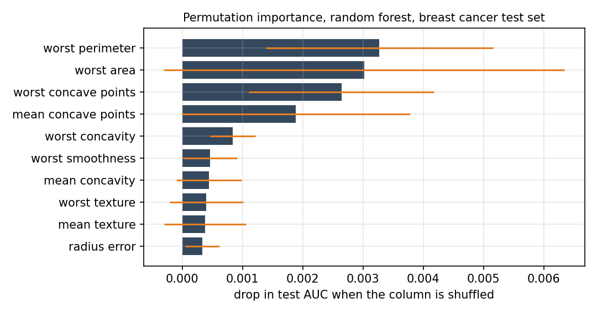
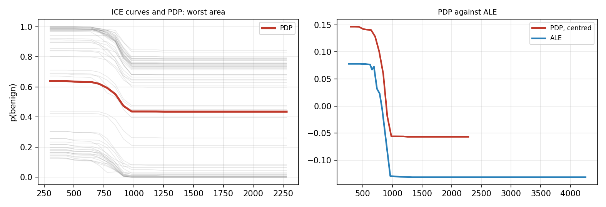
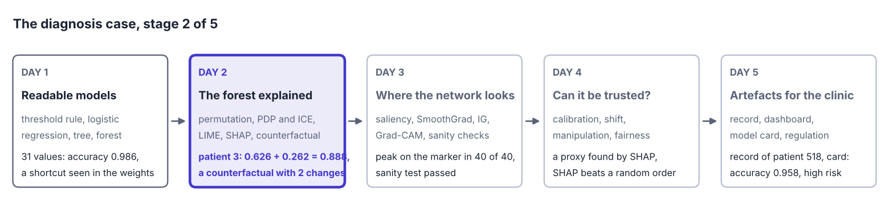
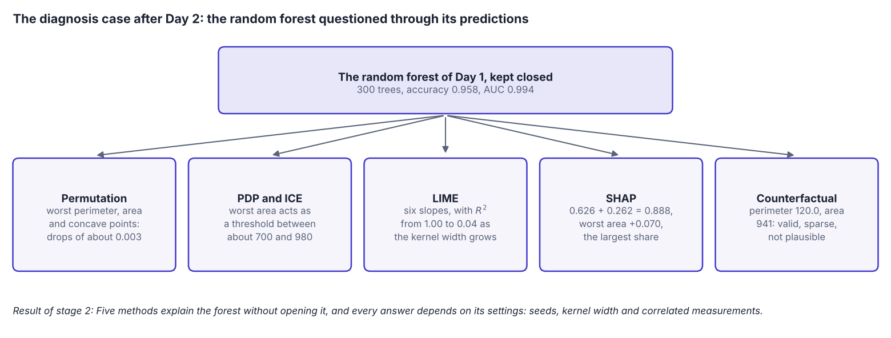
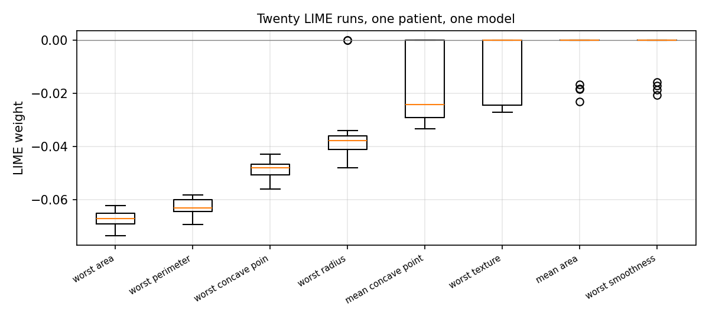

Overview
Day 1 showed models that explain themselves. Most models in use cannot be read directly: A random forest of 300 trees or a boosted ensemble makes good predictions without a readable structure. Model-agnostic methods explain such models by asking them questions, that is, by changing the inputs and watching the predictions [1]. This day covers the main families: Permutation importance for the whole model, partial dependence and individual conditional expectation (ICE) curves for the effect of one feature [2], local interpretable model-agnostic explanations (LIME) [3] and Shapley additive explanations (SHAP) [4] for one prediction, and counterfactuals [5] and anchors [6] for what would change a prediction and what keeps it. The running example is a random forest for the tumour data of Day 1.
Day at a glance
flowchart LR A["A model that cannot be read"] --> B["Which features matter?"] B --> C["How does a feature act?"] C --> D["Why this case? LIME"] D --> E["Why this case? SHAP"] E --> F["What would change it?"] F --> G["Choosing a method"] G --> S["The diagnosis case, stage 2"] S --> H["Python step 2"]
Every method on this page is also written as Python code in the Colab notebook of the day. A Colab notebook is a document of text and Python code that runs in the web browser, with nothing to install. Its code is divided into numbered sections. Each orange box on this page names the section whose code carries out what the text above the box explains. The box says what to run and what to look at in that section, and its button opens the notebook at that place. The practice parts and the self-assessment of the day are in the interactive lab.
Explaining a model that cannot be read
Day 1 built readable models of the diagnosis. A threshold rule on the worst concave points was right for 89.5 percent of the test tumours, a tree of depth three for 94.4 percent and a logistic regression with 31 values for 98.6 percent, more than a random forest with 10344 nodes. On the lesion images, a model that was 96 percent accurate fell to the level of guessing once the marker carried no information, and a map of its weights showed why.
This day keeps the tumour data and turns to the random forest, the model of Day 1 that cannot be read. Without opening it, the day answers four questions of the audit: which measurements the forest relies on, how a measurement acts, why the forest decides as it does for one patient and what would change that decision.
A model-agnostic method treats the model as a box with inputs and outputs. It needs only one thing from the model: the ability to predict for any input it is given. By changing the inputs in a planned way and watching the predictions, it builds an explanation that can be read, whatever the model is inside [1]. The same method therefore works for a random forest, a boosted ensemble or a neural network, and two models can be compared with the same explanation. A model of this kind, too large to read and used only through its predictions, is called a black box.
A case, here a tumour, is described by \(d\) numbers, its features: \(x = (x_1, \ldots, x_d)\), where \(x_j\) is the value of feature \(j\). The model is a function \(f\), and \(f(x)\) is its prediction for the case \(x\). A data set holds \(n\) cases \(x^{(1)}, \ldots, x^{(n)}\) with their known outcomes \(y^{(1)}, \ldots, y^{(n)}\), the labels.
The methods of the day answer different questions. Some describe the whole model, others one prediction. The model of the day is a random forest of 300 trees for the tumour data, which reaches about 96 percent accuracy on the test tumours, and every method of the day explains it.
The tumour data of Day 1 hold 569 breast tumours [8]. Each has \(d = 30\) measurements of its cell nuclei and a label, \(y = 1\) for benign and \(y = 0\) for malignant. Ten properties of a nucleus are measured, among them its radius, its perimeter and its area. Others are the texture, which is the variation of the grey values, the smoothness of the outline, and the concavity and the concave points, the depth and the number of dents in the outline. For each property the data hold the mean over the nuclei of an image, its standard error, in a column named error, and the mean of the three largest values, named worst. A quarter of the tumours, 143, are set aside as test tumours, and the model learns from the other 426, the training tumours.
The model is a random forest, a set of decision trees. A decision tree, the readable model of Day 1, asks a sequence of yes or no questions about the measurements and ends in a leaf. Each tree of a forest is grown on a random resample of the training tumours and may use only a random part of the measurements at each question, so the trees differ. Tree number \(b\) answers with the share of benign tumours among the training tumours in the leaf that the case reaches, written \(p_b(x)\), and the forest averages its \(B\) trees:
With \(B = 300\) trees, \(f(x)\) is a number between 0 and 1, the predicted probability that the tumour is benign, and the forest decides for benign when \(f(x) > 0.5\). Its trees hold 8992 questions and leaves in total, far too many to follow.
Two numbers measure the quality of the forest on the \(n = 143\) test tumours. The accuracy is the share of correct decisions. The area under the receiver operating characteristic curve, abbreviated AUC, does not need the threshold of 0.5: It is the share of all pairs of one benign and one malignant tumour in which the benign tumour receives the higher prediction.
Here \(n_1\) and \(n_0\) are the numbers of benign and of malignant test tumours. An AUC of 1 means that every benign tumour is ranked above every malignant one, and 0.5 is the level of guessing. The forest decides 137 of the 143 test tumours correctly, an accuracy of \(137 / 143 = 0.958\), and it orders 4741 of the \(90 \times 53 = 4770\) pairs correctly, an AUC of \(4741 / 4770 = 0.994\).
The case of the day is test patient 3. The forest gives this tumour \(f(x) = 0.888\), the average of its 300 tree answers, and the diagnosis in the data is benign. Among the test tumours, 70 of the 90 benign ones receive more than 0.9 and 42 of the 53 malignant ones less than 0.1. The patient is a benign case with some doubt left.
Python code in the Colab notebook, Section 1. Open Section 1 of the Colab notebook and run it. The setup cell, Section 0, has already trained the random forest rf, defined the function f, which returns the predicted probability of benign, and chosen the patient whose prediction the day explains, CASE = 3. It printed the AUC on the test data. Section 1 prints the test accuracy and the probability for this patient and draws the histogram of the probabilities of all test tumours.
Check your understanding. What does a model-agnostic explanation method need from the model?
Which features matter? Permutation importance
Permutation importance asks how much the model relies on a feature. It shuffles the values of that feature across the test cases, which breaks the link between the feature and the outcome, and measures how much the performance drops. A large drop means the model depends on the feature; no drop means it can do without it. Repeating the shuffle shows how stable the result is.
As a formula, let \(X\) be the table of the test cases, with one row per case and one column per feature, \(y\) their labels, and \(M(f, X, y)\) a performance measure, the accuracy or the AUC. Let \(\tilde{X}^{(j,r)}\), with a tilde, be the same table after the values of column \(j\) have been put into a random order for the \(r\)-th time: Every case keeps its other features and its label and receives the value of feature \(j\) of some other case. The drop of one shuffle, the importance as the mean drop over \(R\) shuffles, and its standard deviation are
For the forest, the measure is the AUC, and each of the 30 measurements is shuffled \(R = 10\) times. A feature that the model never reads has an importance of exactly 0, because shuffling it changes no prediction. A value slightly below 0 means that a shuffle improved the performance by chance.
A rule calls a tumour benign when its worst area is below 800. Four test tumours have the areas 400, 1200, 600 and 900 and the labels benign, malignant, benign and malignant, so the rule decides all four correctly: Its accuracy is 1.
A first shuffle gives the tumours the areas 1200, 400, 600 and 900. The first two decisions are now wrong, and the accuracy is \(2 / 4 = 0.5\), a drop of \(1 - 0.5 = 0.5\). A second shuffle, 600, 900, 400, 1200, leaves every tumour on its side of 800, so the accuracy stays \(4 / 4 = 1\), a drop of \(1 - 1 = 0\). A third shuffle, 900, 600, 1200, 400, makes all four decisions wrong, so the accuracy is \(0 / 4 = 0\), a drop of \(1 - 0 = 1\).
The importance is the mean drop, \((0.5 + 0 + 1) / 3\)\({} = 1.5 / 3\)\({} = 0.5\). The drops lie \(0.5 - 0.5 = 0\), \(0 - 0.5 = -0.5\) and \(1 - 0.5 = 0.5\) from this mean, so the standard deviation is \(\sqrt{(0^2 + 0.5^2 + 0.5^2) / 3}\)\({} = \sqrt{0.5 / 3}\)\({} = \sqrt{0.167}\)\({} = 0.41\). With four cases one shuffle says little, which is why the shuffle is repeated and the spread reported.
Interactive lab, Part E. The same rule and four tumours with sliders for the threshold and the four areas: the decisions before and after three shuffles, the drops, the importance and its spread, step by step.

The figure shows the ten measurements with the largest importance. A bar is the mean drop \(\mathrm{PI}_j\), and the orange line reaches one standard deviation \(\mathrm{SD}_j\) to each side. The worst perimeter leads with 0.0033, followed by the worst area with 0.0030 and the worst concave points with 0.0026. All drops are tiny: Even for the first measurement the AUC falls only from 0.994 to about \(0.994 - 0.0033 = 0.991\). The spread is as large as the bars, 0.0033 for the worst area, so the order of the first places is not reliable. Ten of the 30 measurements have an importance of zero or slightly below.
A coach who wants to know how much a team relies on one player can let it play without that player and watch the results. When another player can fill the same role, the results hardly drop, and both players may look unimportant, although the team needs at least one of them. Permutation importance asks the same question of a model, and correlated features fill in for each other in the same way.
One caution matters in practice. When two features carry the same information, shuffling one of them costs little because the model can use the other, and both may look unimportant. The tumour data contain many such pairs, for example the radius and the perimeter of a nucleus. This is the correlation trap of permutation importance. Two features are correlated when they rise and fall together, which the correlation coefficient, defined in the last section of this lecture, measures on a scale from \(-1\) to 1. Of the \(30 \times 29 / 2 = 435\) pairs of measurements, 21 have a coefficient above 0.9, so the forest can replace almost any measurement by a relative, which explains the tiny drops. That section also shows the effect with two measurements that are almost copies of each other, the mean radius and the mean perimeter.
Scene: Shuffle a column. Permutation importance on twelve tumours. The model calls a tumour malignant when its worst radius and its worst perimeter, each scaled, add up to more than 0, and it ignores the texture. The two measurements carry almost the same information, as in the data of the day. Each button shuffles one column, or both correlated columns with the same order, and the bars collect the mean drop of the accuracy over all shuffles so far.
A shuffle also creates cases that cannot exist, such as a nucleus with a small radius and a large perimeter. The conditional variant of permutation importance avoids them: It shuffles a feature only among cases with similar values of its closest relative, and so measures what the feature adds beyond that relative.
Python code in the Colab notebook, Section 2. Open Section 2 of the Colab notebook and run it. The function permutation_importance_scratch shuffles one column with rng.permutation, measures the drop of the AUC and repeats this ten times for every feature. The cell draws the mean drops with their standard deviations as error bars and lists both numbers in a table below the figure.
Check your understanding. Shuffling a feature barely changes the accuracy. What can be concluded?
Check your understanding. A model has a test accuracy of 0.90. After three shuffles of one feature the accuracies are 0.80, 0.84 and 0.82. What is the permutation importance of the feature?
How does a feature act? Partial dependence and ICE
Partial dependence shows how the average prediction changes when one feature is set to different values for all cases. ICE curves show the same for each case separately, so that differences between cases become visible. If all ICE curves have the same shape, the average tells the whole story; if they cross or spread, the feature acts differently for different cases, usually because it interacts with other features [2].
Both are computed by overwriting one column of the data. For case \(i\), write \(x^{(i)}_{-j}\) for all its features except feature \(j\), and \(f(v, x^{(i)}_{-j})\) for the prediction when feature \(j\) is set to the value \(v\) while the others keep their values. The ICE curve of case \(i\) and the partial dependence, abbreviated PD, are these predictions as functions of \(v\):
The value \(v\) runs over a grid from small to large values of the feature. The partial dependence at \(v\) is the average of the \(n\) ICE curves at \(v\), and its curve is called a partial dependence plot, abbreviated PDP. Two features interact when the effect of one depends on the value of the other, which shows as ICE curves of different shapes.
A model of two features multiplies them: \(f(x_1, x_2) = x_1 x_2\). Three cases have the features \((1, 0)\), \((2, 1)\) and \((3, 2)\). For feature 1, the ICE curve of the first case is \(f(v, 0) = v \times 0 = 0\) for every \(v\), that of the second case is \(f(v, 1) = v \times 1 = v\), and that of the third is \(f(v, 2) = v \times 2 = 2v\).
At \(v = 1\) the three curves have the values 0, 1 and \(2 \times 1 = 2\), so the partial dependence is \((0 + 1 + 2) / 3 = 3 / 3 = 1\). At \(v = 3\) the values are 0, 3 and \(2 \times 3 = 6\), and the partial dependence is \((0 + 3 + 6) / 3 = 9 / 3 = 3\). It rises by 1 for every unit of feature 1, while the single curves rise by 0, by 1 and by 2. The different slopes are the sign of an interaction: The effect of feature 1 depends on feature 2.
A painkiller helps a person in pain and does nothing for a person without pain. Averaged over a crowd, its effect looks small and describes almost nobody. A partial dependence plot is such an average, and the ICE curves keep one curve per person, so that differences of this kind stay visible.

The left panel shows the ICE curves of 60 test tumours for the worst area and, in red, their average. The vertical axis is the predicted probability of benign. Up to an area of about 640 the curves hardly move, between about 700 and 980 every curve falls, and above 1000 they are flat: The forest has learned a threshold. The average falls from 0.64 to 0.44. The single curves fall by 0.11 to 0.30, more for tumours that start near 1 than for tumours that start near 0. Only 4 of the 60 curves cross 0.5, so for most tumours a larger worst area alone does not change the decision.
Partial dependence has a weak point. It sets feature \(j\) to \(v\) for every case, also where this value cannot occur together with the other features: A tumour with a worst radius of 12 is given a worst area of 2000, and no such tumour exists in the data. Accumulated local effects, abbreviated ALE, avoid this [2]. The range of the feature is cut into \(K\) intervals with the edges \(z_0 < z_1 < \ldots < z_K\), chosen so that each holds about the same number of cases. Interval \(k\) holds the \(n_k\) cases whose value lies above \(z_{k-1}\) and at most at \(z_k\), the set \(I_k\), and the smallest value belongs to the first interval. Each case is moved only from the lower to the upper edge of its own interval. The mean change of the prediction is the local effect \(\Delta_k\), and the curve adds up, or accumulates, these effects:
The constant \(c\) is chosen so that the curve has the average 0 over the cases. An ALE curve therefore shows changes and not levels: how much higher or lower the prediction is than on average.
For feature 1 of the example above, take the edges \(z_0 = 1\), \(z_1 = 2\) and \(z_2 = 3\). The first interval holds the cases with the values 1 and 2, and the second the case with the value 3. Moving the first case from 1 to 2 changes its prediction by \(f(2, 0) - f(1, 0)\)\({} = 0 - 0\)\({} = 0\) and the second by \(f(2, 1) - f(1, 1)\)\({} = 2 - 1\)\({} = 1\), so \(\Delta_1 = (0 + 1) / 2 = 0.5\). In the second interval, \(\Delta_2\)\({} = f(3, 2) - f(2, 2)\)\({} = 6 - 4\)\({} = 2\).
Before centring, the ALE curve has the values 0, \(0 + 0.5 = 0.5\) and \(0.5 + 2 = 2.5\) at the three edges. The three cases lie at these edges, so the centring constant is \(c = (0 + 0.5 + 2.5) / 3 = 1\), and the centred curve has the values \(-1\), \(-0.5\) and 1.5. From 2 to 3 the curve rises by 2, while the partial dependence rises from \((0 + 2 + 4) / 3 = 2\) to 3, by 1: The ALE curve rises twice as much. The partial dependence also averages over the first case, although its second feature of 0 never occurs together with a first feature of 3.
Interactive lab, Part F. The product model and its three cases with sliders for their second features: the ICE curves, the partial dependence, the local effects and the centred curve, step by step.
The right panel compares the two curves for the worst area, with \(K = 20\) intervals and the partial dependence centred by subtracting its mean over the grid. Both fall in the same place and by almost the same amount, 0.20 and 0.21. They lie at different heights only because each is centred with its own average, and the ALE curve reaches further to the right because its last interval ends at the largest test value, 4254. On this model the impossible combinations did little harm. When the two curves differ in shape, the ALE curve is the one to trust for correlated features [2].
Two further measurements, the worst concave points and the worst radius, are drawn in the same way. The grid has 100 values between about the 5th and the 95th percentile of the test tumours, the values below which 5 and 95 percent of them lie. The average runs over all 143 test tumours. It falls from 0.66 to 0.49 as the worst concave points grow from 0.03 to 0.22, and from 0.65 to 0.53 as the worst radius grows from 10.5 to 25.2.
Python code in the Colab notebook, Section 3. Open Section 3 of the Colab notebook and run it. PartialDependenceDisplay.from_estimator with kind="both" draws the ICE curves of 60 tumours and their average, the partial dependence, for two measurements. A list below the figure then offers every other measurement for the same plot.
Why this case? LIME
LIME explains one prediction by fitting a simple model around it [3]. It creates many inputs close to the case, asks the black box for their predictions, and fits a linear model to these answers, giving more weight to inputs that are closer to the case. The weights of the linear model are the explanation. The width of the neighbourhood is a choice, and the explanation can change with it, as the animation shows. The simple model is called a surrogate, a stand-in for the black box near the case.
The method has five steps. First, \(N\) samples \(z_1, \ldots, z_N\) are drawn around the case \(x\): Feature \(j\) of a sample is a random number from a normal distribution, the bell-shaped distribution, with the mean \(x_j\) and the standard deviation \(s_j\) of this feature in the training data. Second, the black box is asked for \(f(z_k)\) for every sample. Third, every sample receives a weight between 0 and 1 that falls with its distance \(D(x, z)\) from the case, counted in standard deviations:
Here \(h\) is the kernel width: Samples much closer to the case than \(h\) have a weight near 1, and samples much further away count almost nothing. Fourth, a few features are selected, six for the patient of the day, the set \(K\), and a linear surrogate \(g\) is fitted to the answers of the black box:
The first line is the surrogate: an intercept \(b\) plus, for each selected feature, a weight \(w_j\) times the distance of the sample from the case in standard deviations. The second line is what the fit makes as small as possible by its choice of \(b\) and the weights. It adds the squared errors of the surrogate on the samples, each multiplied by the weight of its sample, and a penalty that keeps the weights small. The factor \(\alpha\) is 1 here, and such a fit is called a weighted ridge regression. Fifth, the weights are read as the explanation. A weight \(w_j\) is a slope: the change of the prediction near the case when feature \(j\) grows by one standard deviation. It says nothing about whether the value of the case is high or low.
For a single feature and no penalty the fit has a closed form, which the animation uses. With \(\pi_k\) for the weight of sample \(k\), and \(\bar{z}\) and \(\bar{f}\), with a bar, for the weighted means of the samples and of the answers, the slope is
A surrogate is worth reading only when it imitates the black box near the case. This is the fidelity of Day 1, the share of the variation of the answers that the surrogate reproduces, written \(R^2\):
An \(R^2\) of 1 means that the surrogate reproduces every answer, and 0 that it is no better than the constant \(\bar{f}\).
A case has the feature value \(x = 2\), counted in standard deviations. Four samples at 1, 2, 3 and 6 receive the answers 0.2, 0.4, 0.6 and 0.1 from the black box: The model rises near the case and is low far away. The distances of the samples from the case are \(|1 - 2| = 1\), 0, 1 and \(|6 - 2| = 4\).
With the kernel width \(h = 1\) the weights are \(e^{-1^2 / 1} = e^{-1} = 0.37\), \(e^{0} = 1\), 0.37 and \(e^{-4^2 / 1} = e^{-16}\), which is practically 0. The far sample does not count. The weights add up to \(0.37 + 1 + 0.37 = 1.74\). The weighted sum of the positions is \(0.37 \times 1 + 1 \times 2 + 0.37 \times 3\)\({} = 3.48\), so \(\bar{z} = 3.48 / 1.74 = 2\), and that of the answers is \(0.37 \times 0.2\)\({} + 1 \times 0.4\)\({} + 0.37 \times 0.6\)\({} = 0.696\), so \(\bar{f} = 0.696 / 1.74 = 0.4\). The samples lie \(-1\), 0 and 1 from \(\bar{z}\), and their answers \(-0.2\), 0 and 0.2 from \(\bar{f}\). The numerator of the slope is \(0.37 \times (-1) \times (-0.2)\)\({} + 0.37 \times 1 \times 0.2\)\({} = 0.148\), the denominator is \(0.37 \times 1^2 + 0.37 \times 1^2\)\({} = 0.74\), and the slope is \(0.148 / 0.74 = 0.2\). The line \(g(z) = 0.4 + 0.2\,(z - 2)\) passes through all three samples that count, so \(R^2 = 1\).
With \(h = 10\) the weights are \(e^{-1 / 100} = 0.99\), 1, 0.99 and \(e^{-16 / 100} = 0.85\), so all four samples count almost equally. The weighted means move to \(\bar{z} = 2.89\) and \(\bar{f} = 0.333\), the far sample pulls the line down, the slope becomes \(-0.03\), and \(R^2\) falls to 0.09. The same samples give a rising or a falling explanation, depending on the kernel width.
Interactive lab, Part D. The same case and four samples with sliders for the kernel width and the answer of the far sample: the weights, the weighted means, the slope and the fidelity, step by step.
On a walk the ground looks flat, although the Earth is round. A flat map of a town is accurate, and a flat map of a whole continent distorts it. LIME draws such a local map of a model: a straight line that is accurate near the case when the neighbourhood is small and misleading when it is wide. The kernel width decides the size of the map.
Animation. LIME on one feature. Dots are samples sized by their weight; the dashed line is the local surrogate. Change the kernel width and the seed and watch the slope and the local fidelity \(R^2\).
In the animation the case lies at the feature value 0.42, where the curve of the model falls with a slope of \(-0.33\), and 40 samples are drawn around it. With the smallest kernel width, 0.02, the surrogate finds this slope, \(-0.32\), with \(R^2 = 1.00\). With the width 0.10 the slope is \(-0.20\) and \(R^2 = 0.79\), and with 0.20 the line is almost flat and \(R^2 = 0.04\). With 0.50 the slope is positive, 0.21, because the surrogate now follows the rise of the whole curve. These values belong to seed 1, the number that starts the random number generator. One model and one case receive opposite explanations for two kernel widths, so a LIME explanation is reported with its kernel width, its seed and its \(R^2\).
Check your understanding. What does LIME fit around the case it explains?
Why this case? Shapley values and SHAP
Shapley values come from cooperative game theory: They divide the gain of a team fairly among its players. For a prediction, the players are the features and the gain is the difference between this prediction and the average prediction. Each feature receives the average change it causes when it joins the other features, taken over all orders in which features can join [4].
The idea needs one definition. A subset \(S\) of the features is called a coalition, and its value \(v(S)\) is the output of the model when only the features in \(S\) are known: They take the values of the case, and every other feature is replaced by a neutral value from a baseline input \(x'\), for example its average. With \(F\) for the set of all \(d\) features and \(\varnothing\) for the empty set, \(v(F) = f(x)\) is the prediction for the case and \(v(\varnothing) = f(x')\) is the output when nothing is known about it. The Shapley value of feature \(j\) is written \(\phi_j\). For two features there are two orders, and each feature joins either first or second:
With \(d\) features there are \(d! = 1 \times 2 \times \cdots \times d\) orders, read \(d\) factorial. For an order \(o\), let \(P_j(o)\) be the set of features that stand before feature \(j\). The Shapley value is the change that feature \(j\) causes when it joins this set, averaged over all orders:
The sign \(\cup\) joins two sets. A set \(S\) with \(|S|\) features stands in front of feature \(j\) in \(|S|! \, (d - |S| - 1)!\) orders, with \(0! = 1\). Counting the orders in this way gives a second form of the same formula, a sum over all subsets \(S\) of the other features, written \(S \subseteq F \setminus \{j\}\):
For three features the weights are \(1/3\) for the empty set, \(1/6\) for each set of one feature and \(1/3\) for the set of two. The form over orders is the one of the animation and of Part C of the interactive lab, and the form over subsets is the one of the exact computation in the optional section.
A model has three features. Its outputs for the eight coalitions are \(v(\varnothing) = 0.20\), \(v(\{1\}) = 0.50\), \(v(\{2\}) = 0.30\), \(v(\{3\}) = 0.20\), \(v(\{1, 2\}) = 0.70\), \(v(\{1, 3\}) = 0.60\), \(v(\{2, 3\}) = 0.40\) and \(v(\{1, 2, 3\}) = 0.90\). In the order 1, 2, 3, feature 1 joins the empty set and adds \(0.50 - 0.20 = 0.30\), feature 2 joins feature 1 and adds \(0.70 - 0.50 = 0.20\), and feature 3 joins both and adds \(0.90 - 0.70 = 0.20\). The table below lists the six orders.
The Shapley value of a feature is the mean of its column: \(\phi_1 = 2.40 / 6 = 0.40\), \(\phi_2 = 1.20 / 6 = 0.20\) and \(\phi_3 = 0.60 / 6 = 0.10\). The three values add up to \(0.40 + 0.20 + 0.10 = 0.70\), which is \(v(\{1, 2, 3\}) - v(\varnothing)\)\({} = 0.90 - 0.20\). Feature 3 changes nothing when it stands alone, but it helps once another feature is present, so its value is 0.10 and not 0.
The form over subsets gives the same number for feature 3. Its four changes are \(v(\{3\}) - v(\varnothing)\)\({} = 0.20 - 0.20\)\({} = 0\), \(v(\{1, 3\}) - v(\{1\})\)\({} = 0.60 - 0.50\)\({} = 0.10\), \(v(\{2, 3\}) - v(\{2\})\)\({} = 0.40 - 0.30\)\({} = 0.10\) and \(v(\{1, 2, 3\}) - v(\{1, 2\})\)\({} = 0.90 - 0.70\)\({} = 0.20\), and the weighted sum is \(\tfrac{1}{3} \times 0\)\({} + \tfrac{1}{6} \times 0.10\)\({} + \tfrac{1}{6} \times 0.10\)\({} + \tfrac{1}{3} \times 0.20\), which is \(0 + 0.017 + 0.017 + 0.067\)\({} = 0.10\).
| Order | Feature 1 adds | Feature 2 adds | Feature 3 adds |
|---|---|---|---|
| 1, 2, 3 | 0.30 | 0.20 | 0.20 |
| 1, 3, 2 | 0.30 | 0.30 | 0.10 |
| 2, 1, 3 | 0.40 | 0.10 | 0.20 |
| 2, 3, 1 | 0.50 | 0.10 | 0.10 |
| 3, 1, 2 | 0.40 | 0.30 | 0.00 |
| 3, 2, 1 | 0.50 | 0.20 | 0.00 |
| Sum | 2.40 | 1.20 | 0.60 |
Interactive lab, Part C. A model with three features and the outputs of its eight coalitions: the three Shapley values computed by hand and checked, with the six orders shown on request.
Animation. Shapley values from orderings of three features. Each order adds the change of the output at the moment a feature joins; the Shapley value is the average. The slider sets the interaction between radius and concavity.
The animation plays the six orders for three tumour measurements. Its output is 0.30 when nothing is known. The radius adds 0.25, the texture 0.05 and the concavity 0.18, and when the radius and the concavity are both known an extra 0.20 is added, an interaction. The Shapley values come out as 0.35, 0.05 and 0.28: Each partner receives half of the interaction. They add up to \(0.35 + 0.05 + 0.28 = 0.68\), the full output of 0.98 minus 0.30.
The contributions add up exactly to the prediction minus the average, a property that LIME does not have. In symbols:
This property is called efficiency, and the SHAP library calls it additivity. A second property is the dummy property: A feature that changes no output, whatever coalition it joins, receives the value 0. Two more are symmetry, for features that act alike, and linearity, for models that are sums of models. The Shapley value is the only division of the gain that has all four properties [4].
The exact formula needs the value of every coalition, and there are \(2^d\) of them: 16 for four features and more than a billion for the 30 measurements of a tumour. SHAP is a family of methods that compute or approximate the values in reasonable time [4]. SHAP makes the computation fast; for tree models it is exact. It takes as \(v(S)\) the average prediction over the data when only the features in \(S\) are fixed at the values of the case. The value of the empty coalition is then the average prediction \(\mathbb{E}[f(X)]\), where \(\mathbb{E}\) stands for an average over the data. It is written \(\phi_0\) and called the base value or expected value, and the explanation is an additive model of the prediction:
The SHAP values of the forest come from TreeSHAP, the variant for trees. Where a tree asks about a feature outside \(S\), it follows both branches and weights them by the share of training tumours that went each way. For this it reads the trees themselves, so it is the one method of the day that opens the box. The model-agnostic variant, KernelSHAP, needs only predictions and returns in the optional section.
For the patient the base value is \(\phi_0 = 0.626\), close to the share of benign tumours in the training data, 0.627. The 30 SHAP values add up to 0.262, and \(0.626 + 0.262 = 0.888\) is the prediction. The largest are \(+0.070\) for the worst area, \(+0.059\) for the worst perimeter, \(+0.052\) for the worst concave points and \(-0.047\) for the mean concave points. A positive value has pushed the prediction above the average, towards benign, and a negative one towards malignant.
For the patient of the day, LIME and SHAP agree on five of their six most important measurements. Such agreement is reassuring, and disagreement is a signal to look closer. The LIME weights come from the lime library, with 5000 samples, six features and the kernel width \(h = 0.75 \sqrt{d} = 4.11\). All six are negative, from \(-0.069\) for the worst area to \(-0.024\) for the worst texture, while most SHAP values are positive. Both are right, because a weight is a slope and a SHAP value is a contribution. The slope says that the probability of benign falls when the worst area grows. The contribution says that the worst area of this patient, 674.7, is smaller than that of the average training tumour, 872.5, and has therefore raised the probability.
Averaging the absolute SHAP values over all cases also gives a global view of the model:
Here \(\phi_j^{(i)}\) is the SHAP value of feature \(j\) for case \(i\), and the absolute value lets pushes in both directions count. Over the 143 test tumours the largest are 0.072 for the worst area, 0.070 for the worst perimeter and 0.055 for the worst concave points. A summary plot shows every single value as a dot: Its horizontal position is the SHAP value, and its colour is the value of the measurement, red for high and blue for low. For the worst area the red dots lie on the left, so large areas push towards malignant.
Python code in the Colab notebook, Section 4. Open Sections 4 and 5 of the Colab notebook and run them. In Section 4, explain_instance of the lime library returns the six LIME weights of the patient and shap.TreeExplainer(rf) the 30 SHAP values, and the cell draws both as bar charts. Section 5 draws the SHAP values of every test patient with shap.summary_plot.
Check your understanding. The SHAP values of one prediction add up to what?
Check your understanding. A model with two features returns 0.40 when no feature is known, 0.70 with feature 1 alone, 0.50 with feature 2 alone and 0.90 with both. What is the Shapley value of feature 1?
What would change the decision?
A counterfactual explanation answers a different question: What is the smallest change of the inputs that would change the prediction [5]? For a rejected loan applicant, it states what would have led to approval. A good counterfactual changes few features, by small amounts, and stays realistic. An anchor answers the opposite question: Which conditions keep the prediction the same, whatever the other features are [6]?
Wachter and colleagues write the search as a minimisation [5]. Among all inputs \(z\), the counterfactual \(x^{\mathrm{cf}}\) is the one that brings the output close to a wanted output \(y'\) and stays close to the case \(x\):
The first term is the squared distance of the output from the target. The second term measures how far the input has moved, for example as the sum of the absolute changes of the features, each divided by the spread of its feature. The factor \(\lambda\) sets the balance, and the sign arg min returns the input at which the sum is smallest. The wishes for a counterfactual have names: It is valid when the decision really changes, sparse when few features change, proximate when the changes are small, and plausible when the new input could occur in reality.
The counterfactual of the patient is found in a simpler way, step by step. The target is the other class, malignant for the patient. For feature \(j\), let \(m_j\) be the median of the training tumours of the target class, the value below which half of them lie. The search starts at \(z = x\) and moves one feature at a time by a quarter of the remaining way towards this median:
In each round the step is tried for each of eight candidate features, those with the largest mean absolute SHAP value, and only the step that lowers \(f(z)\) most is carried out. The search stops when the decision has flipped, here when \(f(z)\) is no longer above 0.5, or after 25 rounds. A search that always takes the best step of the moment is called greedy. It finds a counterfactual, though not necessarily the nearest one.
The patient has a worst perimeter of 99.31, and the median of the malignant training tumours is 135.1. The first step moves it to \(99.31\)\({} + (135.1 - 99.31)\)\({} / 4\)\({} = 99.31 + 35.79 / 4\)\({} = 99.31 + 8.95\)\({} = 108.26\), and the probability of benign falls from 0.888 to 0.775. The second and the third step raise the worst area towards its median of 1284, first to \(674.7 + (1284 - 674.7) / 4\)\({} = 674.7 + 152.3\)\({} = 827.0\) and then to \(827.0 + (1284 - 827.0) / 4\)\({} = 827.0 + 114.3\)\({} = 941.3\), and the probability falls to 0.691 and 0.575. Two more steps of the worst perimeter, to \(108.26\)\({} + (135.1 - 108.26)\)\({} / 4\)\({} = 108.26 + 6.71\)\({} = 114.97\) and \(114.97\)\({} + (135.1 - 114.97)\)\({} / 4\)\({} = 114.97 + 5.03\)\({} = 120.00\), bring it to 0.513 and 0.474. The search stops after five steps.
The counterfactual reads: Had the worst perimeter been 120.0 instead of 99.3 and the worst area 941 instead of 675, the forest would have decided for malignant. It is valid, and it is sparse, with 2 of 30 measurements changed. It is not plausible: Its worst perimeter is \(120.00 / 15.05 = 7.97\) times its unchanged worst radius of 15.05, and in no training tumour does this ratio exceed 7.67. A counterfactual is checked against the data before it is shown to anyone.
A rejected job applicant may hear that two more years of experience would have led to an interview. This is a counterfactual: It names a change, not the reasons inside the decision. It helps only when the change is possible. A sentence such as had you been ten years younger is valid and useless, which is why plausibility and actionability are checked before a counterfactual is shown.
An anchor is a rule, a small set of conditions such as an interval for each of a few features [6]. Two numbers describe a rule \(A\) for a case \(x\). Its precision is the share of inputs inside the rule that receive the same decision as the case, and its coverage is the share of all cases to which the rule applies:
The samples for the precision fulfil the conditions of the rule, and their other features are varied at random. For example, when 80 of 1000 cases lie inside a rule, its coverage is \(80 / 1000 = 0.08\). When the model gives 480 of 500 samples inside the rule the decision of the case, its precision is \(480 / 500 = 0.96\). A useful anchor has a high precision, usually at least 0.95, and a coverage that is not tiny: A rule that fits only the case itself explains nothing. The two pull against each other, because every added condition can raise the precision and lowers the coverage. The optional section at the end of this lecture searches for an anchor of the patient.
Python code in the Colab notebook, Section 6. Open Section 6 of the Colab notebook and run it. In the function counterfactual, the line with min(features, key=...) tries the step z[j] + (goal[j] - z[j]) / 4 for each of the eight candidate measurements and keeps the one that lowers the probability of benign most. The cell prints the probability of benign for the patient and for the counterfactual and the two measurements that changed. To follow the steps of the worked example above, add a cell with for k in range(1, 6): print(k, round(float(f(pd.DataFrame([counterfactual(x0, candidates, steps=k)[0]]))[0]), 3)).
Check your understanding. A counterfactual says: Had the income been 5000 higher, the loan would have been approved. What does it describe?
Choosing a method
| Question | Method | What it returns |
|---|---|---|
| Which features does the model rely on overall? | permutation importance, mean absolute SHAP values | global: one number per feature |
| How does one feature change the prediction? | partial dependence, ICE curves | global: one curve per feature, and one curve per case for ICE |
| Why did this case receive its prediction? | LIME, SHAP | local: one number per feature, a slope for LIME and a contribution for SHAP |
| What would change this decision? | counterfactual | local: a changed input |
| Under which conditions does the decision hold? | anchor | local: a rule with its precision and coverage |
The choice follows the question, and the reader decides the form. A developer may want all 30 contributions of a prediction, while a patient is better served by one counterfactual sentence. Global means that the answer describes the whole model, and local that it describes one prediction, the two scopes of Day 1.
Interactive lab, Part B. Questions from practice, each to be matched with the family of methods that answers it best.
Part A of the interactive lab applies three of the methods to one small model with two features \(a\) and \(b\), both between 0 and 1:
The function \(\sigma\) is the logistic function of Day 1, which turns any number into a value between 0 and 1. The last term in the bracket is an interaction: The effect of \(a\) depends on \(b\). The baseline of the lab is the centre of the square, \(a = b = 0.5\), where the output is \(\sigma(0) = 0.5\). For the case at the start, \(a = 0.62\) and \(b = 0.40\), the output is 0.580, and the two-feature formula gives the Shapley values \(+0.164\) for \(a\) and \(-0.083\) for \(b\), which add up to \(0.580 - 0.500\). The worked example below computes them. The bars named LIME show the slope of a local surrogate times the distance of the case from the baseline, so that they can be compared with the Shapley values. The counterfactual is the nearest point at which the output crosses 0.5.
For \(a = 0.62\) and \(b = 0.40\) the bracket is \(6 \times 0.12\)\({} + 3 \times (-0.10)\)\({} + 8 \times 0.12 \times (-0.10)\), which is \(0.72 - 0.30 - 0.096\)\({} = 0.324\), and the output is \(1 / (1 + e^{-0.324})\)\({} = 1 / (1 + 0.7233)\)\({} = 1 / 1.7233\)\({} = 0.5803\). When only \(a\) is known, \(b\) stays at the baseline 0.5, the bracket is \(6 \times 0.12 = 0.72\), and \(v(\{a\})\)\({} = 1 / (1 + e^{-0.72})\)\({} = 1 / 1.4868\)\({} = 0.6726\). When only \(b\) is known, the bracket is \(3 \times (-0.10) = -0.30\), and \(v(\{b\})\)\({} = 1 / (1 + e^{0.30})\)\({} = 1 / 2.3499\)\({} = 0.4256\).
Feature \(a\) adds \(0.6726 - 0.5 = 0.1726\) when it joins first and \(0.5803 - 0.4256 = 0.1547\) when it joins second, so \(\phi_a\)\({} = (0.1726 + 0.1547) / 2\)\({} = 0.1637\), about 0.164. Feature \(b\) adds \(0.4256 - 0.5 = -0.0744\) and \(0.5803 - 0.6726\)\({} = -0.0923\), so \(\phi_b\)\({} = (-0.0744 - 0.0923) / 2\)\({} = -0.1667 / 2\)\({} = -0.0834\), about \(-0.083\). Together they give \(0.1637 - 0.0834 = 0.0803\), the output 0.5803 minus the output 0.5 of the baseline.
Interactive lab, Part A. The small model with two features as a heat map: Click a case and compare its exact Shapley values, a LIME surrogate with a kernel width and a seed of your choice, and the nearest counterfactual.
The diagnosis case, stage 2: the random forest explained from the outside
The methods of this day now come together in the second stage of the project. The random forest of the tumour data stays closed, and five methods question it through its predictions alone. The first figure shows the stage of the project, the second the questions of the audit and the methods that answer them.


| Question | Answer of stage 2 | Section |
|---|---|---|
| Which measurements does the forest rely on? | Permutation importance ranks the worst perimeter, the worst area and the worst concave points first, with drops of the AUC of only 0.003, because correlated measurements stand in for each other | Which features matter? Permutation importance |
| How does a measurement act? | The worst area acts as a threshold between about 700 and 980, and the average prediction falls from 0.64 to 0.44 | How does a feature act? Partial dependence and ICE |
| How far can a local surrogate be trusted? | Its slope and even its sign change with the kernel width, from \(R^2 = 1.00\) to 0.04 in the animation | Why this case? LIME |
| Why 0.888 for test patient 3? | The base value 0.626 plus 0.262 from the 30 SHAP values, led by the worst area with \(+0.070\), and LIME agrees on five of six measurements | Why this case? Shapley values and SHAP |
| What would change the decision? | A worst perimeter of 120.0 and a worst area of 941: valid and sparse, but not plausible | What would change the decision? |
The forest has now been explained without opening it, and every explanation turned out to depend on its settings. Day 3 returns to the lesion images of Day 1 with a convolutional network and explains it from the inside, through its gradients, where the planted marker gives every map a known right answer.
Explanations in your field
The application of the day uses the five problems of Day 1, from medicine, chemistry, manufacturing, energy and civil engineering. For each, it trains a random forest and explains it with permutation importance and SHAP.
Every problem is a yes or no decision, and the yes class is called the positive class. Two problems use measured data, and three are simulated with a known rule, which allows a check that real data do not allow: The explanation can be compared with the rule that produced the outcomes. In the rules of the table, ln is the natural logarithm, and the noise is a random number from a normal distribution with the mean 0.
| Field | Cases, features and positive class | Where the outcome comes from |
|---|---|---|
| medicine | 569 tumours with 30 measurements. Positive class: benign tumour. | Measured data, as on Day 1. |
| chemistry | 178 wines of three cultivars, the plant varieties, with 13 chemical measurements. Positive class: wine of cultivar 1. | Measured data. |
| manufacturing | 1500 simulated weld seams with the welding current, the voltage, the welding speed, the gap between the plates and the plate temperature. Positive class: sound weld. | Sound when 0.04 (current - 180) - 0.9 (speed - 6) - 1.8 (gap - 0.8) + 0.02 (temperature - 40) plus noise with the standard deviation 1 is above 0. The voltage plays no part. |
| energy | 1500 simulated transformers with the amounts of five gases dissolved in their oil: hydrogen (H2), methane (CH4), acetylene (C2H2), ethylene (C2H4) and carbon monoxide (CO). Positive class: fault in the transformer. | Fault when 0.8 ln(C2H2) + 0.6 ln(H2 / 30) + 0.5 ln(C2H4 / 12) - 0.2 ln(CO / 150) plus noise with the standard deviation 0.6 is above 0.6. The methane plays no part. |
| civil | 1500 simulated concrete mixes with the amounts of cement, water, slag, a substitute for cement, and superplasticizer, an additive that makes the mix flow, and the age in days. Positive class: mix reaching a strength of 30 megapascal (MPa). | The strength is 0.09 cement - 0.15 water + 0.04 slag + 0.7 superplasticizer + 9 ln(age / 7) plus noise with the standard deviation 4. |
For each problem, 70 percent of the cases train a new forest of 300 trees, and the other 30 percent are explained. The permutation importance of this section measures the drop of the accuracy, where the forest of the tumour data was measured with the AUC. In the simulated problems the two rankings agree on the first three places: speed, gap and current for the welds, acetylene, hydrogen and ethylene for the transformers, and cement, age and water for the concrete. These are the features with the largest effects in the rules, and the voltage and the methane, which the rules do not use, come last in both rankings. For the wines, both rankings start with the proline, the flavanoids and the alcohol.
For the tumour data the two lists of the first three have no measurement in common. Permutation importance puts the worst texture, the mean texture and the mean concavity first, and SHAP the worst area, the worst perimeter and the worst concave points. The size measurements replace each other when one of them is shuffled, so the correlation trap hides them from permutation importance, while SHAP divides the credit among them. The forest of this section is a new one, trained on another split of the data, with a test accuracy of 0.942.
Python code in the Colab notebook, Section 7. Open Section 7 of the Colab notebook. Its first line is a switch, FIELD = "medicine". Replace the word by chemistry, manufacturing, energy or civil and run the section. The function load_field loads or simulates the data of that field, and the cell trains a random forest on them and draws its permutation importance next to its SHAP summary plot.
Going further (optional)
This section looks at the limits of the methods. A feature that has a near copy in the data shares its importance with the copy. The mean radius and the mean perimeter have a correlation coefficient of 0.998. For two features with the values \(a_i\) and \(b_i\) in case \(i\) and the means \(\bar{a}\) and \(\bar{b}\), this coefficient is
It is 1 when the two features rise and fall together along a straight line, \(-1\) when one falls as the other rises, and near 0 when they are unrelated in this sense. In a forest on four measurements that include both twins, the mean radius has a permutation importance of 0.030. In a forest on three measurements, without the mean perimeter, it has 0.308, about ten times as much, while the test AUC is almost the same, 0.982 and 0.973. A permutation importance describes a model with its other features, not the usefulness of a measurement for the diagnosis.
The default neighbourhood of a LIME implementation can fit the black box poorly, and the same patient can receive different top features from different random seeds. The five steps written from scratch, with 1000 samples, reach a local fidelity of \(R^2 = 0.59\) for the patient. The lime library in its default setting first replaces every measurement by one of four classes, the quarters of the training values. Its surrogate then reaches only \(R^2 = 0.08\), against 0.63 when the measurements stay numbers. In 30 dimensions no sample lies close to the patient: The nearest of the 1000 is 3.3 standard deviations away, so even the better surrogates describe a wide region.

The figure repeats the from-scratch explanation with twenty seeds. Only the worst area, the worst perimeter and the worst concave points are among the six selected measurements in all twenty runs. The worst radius is selected in 18 runs, the mean concave points in 11, the worst texture in 6, and 14 further measurements in one to four runs: In total, 17 measurements appear in some runs and not in others.
Exact Shapley values can be computed when the game is small. Four measurements play, with the medians of the training tumours as the baseline \(x'\), which gives \(2^4 = 16\) coalitions. For the patient of the day there is almost nothing to divide, \(v(F) - v(\varnothing) = -0.010\), so the computation explains the test tumour with the largest gain in absolute value, \(-0.457\). Its Shapley values are \(-0.144\) for the worst radius, \(-0.229\) for the worst concave points, \(-0.075\) for the worst texture and \(-0.009\) for the mean smoothness. They add up to \(-0.457\): Their efficiency, the sum that equals the prediction minus the baseline output, can be checked numerically.
KernelSHAP reaches the same values by another route [4]. It computes \(v(S)\) for many coalitions and fits to them a linear model with one weight per feature, in which a coalition counts with the Shapley kernel \(\pi(S)\):
The sign \(\approx\) reads is approximately, and the bracket in the second line, read \(d\) choose \(|S|\), is the number of coalitions with \(|S|\) features. The fitted weights are the Shapley values. With four features every coalition can be computed, and KernelSHAP reproduces the exact values to five decimals. With many features it computes a random sample of the coalitions, and its result depends on the seed. TreeSHAP needs no sampling: It is exact, but only for trees.
The ranking by mean absolute SHAP value can be compared with the ranking by permutation importance. The comparison uses the rank correlation of Spearman, the correlation coefficient above computed from the ranks 1, 2, 3 and so on instead of the values. It is only 0.36 over the 30 measurements. The same four measurements lead both rankings, but the worst radius is fifth by SHAP and 22nd by permutation importance, and the mean radius is sixth and last: The forest uses both, and it can replace both.
The anchor search builds a rule for the patient from the ten measurements with the largest permutation importance. A condition says that a measurement lies in the same quarter of the training values as the value of the patient. The search adds the condition with the highest precision until the precision reaches 0.95 or the rule has four conditions. It ends far from its target. The final rule has four conditions, on the worst texture, the worst concave points, the worst area and the mean concavity. Its precision is 0.730 on 600 samples, and its coverage is 0.016, that is 7 of the 426 training tumours. A prediction of 0.888 that rests on many measurements is not fixed by four conditions, and the honest report is the rule together with its precision and its coverage.
Finally, the signs of a local slope from LIME and of a contribution from SHAP answer different questions and need not agree. A slope becomes a contribution when it is multiplied by the distance of the case from a reference value. Here the reference is the median \(m_j\) of the training tumours, and the unit is the standard deviation \(s_j\):
The signs are compared for 36 test tumours and, for each, the ten measurements with the largest SHAP values. The raw LIME weight has the sign of the SHAP value in 40 percent of the 360 comparisons, and the converted weight \(c_j\) in 89 percent. A weight and a contribution are compared only after this conversion.
Studies that apply LIME and SHAP to the same model report many disagreements [9, 10], and this section shows four causes. The perturbation distribution is the way in which a method creates its changed inputs: LIME draws from a normal distribution, permutation importance shuffles, and SHAP averages over the data. The value function \(v(S)\) fixes what an unknown feature means, so another baseline gives other Shapley values. A slope is compared with a contribution. Estimator variance means that a method with random samples returns another result with another seed. A report of an explanation therefore names the method, its settings, its seeds and, for a surrogate, its fidelity.
Python code in the Colab notebook, Section 8. Open Section 8 of the Colab notebook, which is optional, and run its cells one after another: the experiment with a duplicated feature, twenty seeds of LIME, exact Shapley values next to KernelSHAP and TreeSHAP, the greedy search for an anchor and the comparison of slopes and contributions. Each cell starts with a note on how its code follows the formulas of this section.
Python step 2: NumPy arrays, randomness and functions
Python code in the Colab notebook, right after Section 0 (setup). Open the notebook and run this step cell by cell: It consists of short pieces of Python code with their explanations, a quick check and three exercises. Topics: Arrays, shape and indexing · Element-wise arithmetic and boolean masks · Randomness that can be reproduced · Functions that receive a model.
The notebook continues with the hands-on sections, and the interactive lab holds three practice parts and the self-assessment. The study path, the daily task and the research assignment are on the day overview.
Review cards
Select a card to turn it over.
References
[1] Ortigossa, E. S., Gonçalves, T., & Nonato, L. G. (2024). Explainable Artificial Intelligence (XAI) - from theory to methods and applications. IEEE Access, 12, 80799-80846.
[2] Apley, D. W., & Zhu, J. (2020). Visualizing the effects of predictor variables in black box supervised learning models. Journal of the Royal Statistical Society Series B: Statistical Methodology, 82(4), 1059-1086. https://doi.org/10.1111/rssb.12377
[3] Ribeiro, M. T., Singh, S., & Guestrin, C. (2016). "Why should I trust you?" Explaining the predictions of any classifier. In Proceedings of the 22nd ACM SIGKDD International Conference on Knowledge Discovery and Data Mining (KDD '16) (pp. 1135-1144). ACM.
[4] Lundberg, S. M., & Lee, S.-I. (2017). A unified approach to interpreting model predictions. In Advances in Neural Information Processing Systems 30 (NeurIPS 2017) (pp. 4765-4774). https://papers.nips.cc/paper/7062-a-unified-approach-to-interpreting-model-predictions
[5] Wachter, S., Mittelstadt, B., & Russell, C. (2018). Counterfactual explanations without opening the black box: Automated decisions and the GDPR. Harvard Journal of Law & Technology, 31(2), 841-887. https://jolt.law.harvard.edu/volumes/volume-31
[6] Ribeiro, M. T., Singh, S., & Guestrin, C. (2018). Anchors: High-precision model-agnostic explanations. In Proceedings of the AAAI Conference on Artificial Intelligence, 32(1), 1527-1535.
[7] Harris, C. R., Millman, K. J., van der Walt, S. J., Gommers, R., Virtanen, P., Cournapeau, D., Wieser, E., Taylor, J., Berg, S., Smith, N. J., et al. (2020). Array programming with NumPy. Nature, 585(7825), 357-362. https://doi.org/10.1038/s41586-020-2649-2
[8] Wolberg, W., Mangasarian, O., Street, N., & Street, W. (1993). Breast Cancer Wisconsin (Diagnostic) [Dataset]. UCI Machine Learning Repository. https://doi.org/10.24432/C5DW2B
[9] Salih, A. M., Raisi-Estabragh, Z., Galazzo, I. B., Radeva, P., Petersen, S. E., Lekadir, K., & Menegaz, G. (2025). A perspective on explainable artificial intelligence methods: SHAP and LIME. Advanced Intelligent Systems, 7(1), 2400304.
[10] Uysal, I., & Kose, U. (2024). Analysis of network intrusion detection via explainable artificial intelligence: Applications with SHAP and LIME. In 2024 Cyber Awareness and Research Symposium (CARS) (pp. 1-6). IEEE.